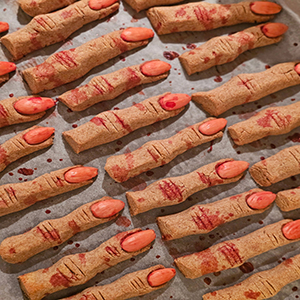

Witch Finger Cookies
Ingredients:
- 1 1/4 cups (145 g.) confectioners' sugar
- 1 cup (2 sticks) unsalted butter, softened
- 1 egg
- 1 tsp. almond extract
- 1 tsp. pure vanilla extract
- 2 3/4 cups (330 g.) all-purpose flour
- 1 tsp. kosher salt
- 1/2 cup finely chopped pistachios (about 70 g.), plus more for decorating
- 3/4 cup sliced almonds (about 85 g.)
- 1/2 cup (135 g.) cherry, strawberry, or raspberry jam
- In the large bowl of a stand mixer, beat confectioners' sugar and butter on medium speed until pale and fluffy, about 2 minutes. Add egg and continue to beat until incorporated and fluffy, about 1 minute more. Add almond extract, vanilla extract, and beat until combined.
- In a small bowl, whisk flour and salt. Add to butter mixture and beat on low speed until just combined. Fold in pistachios. Cover bowl with plastic wrap and refrigerate at least 30 minutes.
- Line 2 rimmed baking sheets with parchment. Remove one-quarter of dough from refrigerator and portion into 12 to 13 (1-Tbsp.) balls. Roll each ball between your palms until it starts to form a finger shape, about the length of your pinky finger but slightly thinner. Arrange logs on prepared sheet and press an almond slice into each, where the nail would be on a finger. Carefully pinch dough just below almond and halfway down log to create a knuckle. Using a sharp knife, carve horizontal lines of varying lengths into knuckle. Place 1 or 2 pistachio pieces in finger to make warts. Repeat with remaining dough. Freeze 30 minutes.
- Preheat oven to 375°. Bake cookies, rotating trays front to back halfway through, until edges are firm and tops are dry, 7 to 9 minutes, Let cool slightly.
- Gently lift off almond fingernail. Add a tiny dab of jam to tip of finger, then replace almond fingernail, pressing down to make jam ooze out. Spread jam onto bottom of each finger. Let cool completely.
